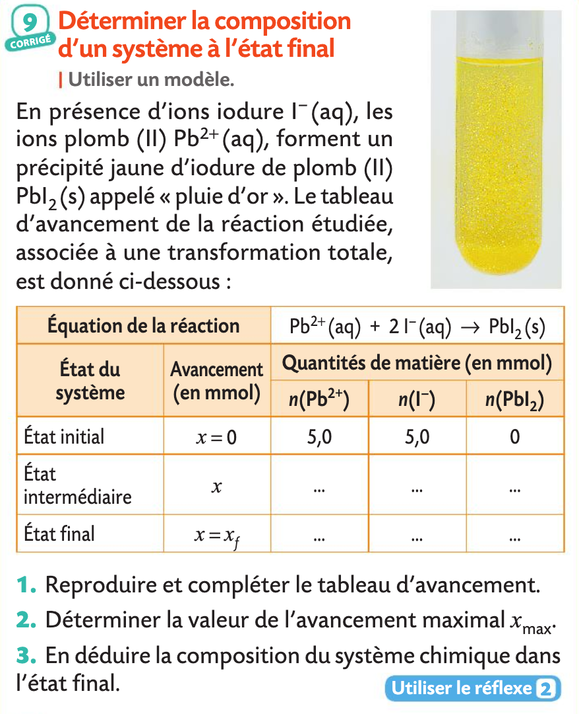
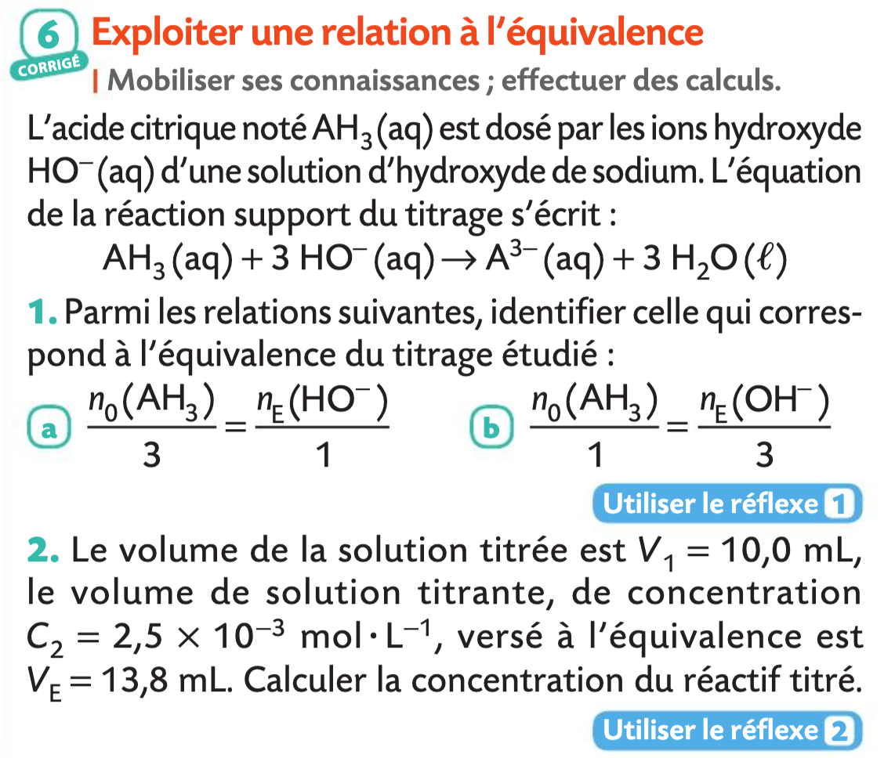

Python en Physique-Chimie⚓︎
Exercice 1 : Bilan de matière
-
Compléter le code suivant dans Capytale (Code : 2787-6384519)
🐍 Script Python 1 2 3 4 5 6 7 8 9 10 11 12 13 14 15 16 17 18 19 20 21 22 23 24 25 26 27 28 29 30
## Bilan de matière print("Équation de la réaction : aA + bB -> cC + dD") print("Entrez les valeurs des nombres stochiométriques:") a = float(input("a = ")) # (1) b = ... # à vous c = ... # à vous d = ... # à vous print("Entrez les quantités initiales de réactifs A et B en mol") nA = float(input("n0(A) = ")) nB = float(input("n0(B) = ")) # Détermination de xmax et du réactif limitant xmaxA, xmaxB = nA / a, nB / b # (2) if xmaxA == xmaxB: # (3) print("Le mélange est stoichiométrique") xmax = xmaxA elif xmaxA < xmaxB: print("... est le réactif limitant") # à vous xmax = xmaxA # (4) else: print("... est le réactif limitant") # à vous xmax = xmaxB # (5) print(f"xmax = {xmax} mol") # Détemination des quantités de matière à l'état final nfA, nfB = nA - a * xmax, nB - b * xmax # (6) nfC, nfD = c * xmax, d * xmax # (7) print("Quantités de matière à l'état final") print(f"nf(A) = {nfA} mol") print(f"nf(B) = {nfB} mol") print(f"nf(C) = {nfC} mol") print(f"nf(D) = {nfD} mol")- La fonction
input()renvoie le texte (on parle de chaîne de caractère) saisie par l'utilisateur (par exemple la chaîne"1") . Ensuite la chaîne peut être convertie en entier avec la fonctionint()(soit pour l'exemple, l'entier1) ou en réel avec la fonctionfloat()comme c'est le cas ici (soit pour l'exemple, le flottant1.0). - Réalisation d'une double affectation en une seule ligne. À la place, on aurait pu écrire
xmaxA = nA / asur une ligne et sur la ligne suivante on aurait écritxmaxB = nB / b. - En python le symbole d'égalité n'est pas
=mais==car en python le signe égal est utilisé pour les affectations. Une affectation ressemble parfois à une égalité ; par exemple si l'on écritx = 5. Mais, ce n'en est pas une, comme on le voit quand on écritx = x+1qui n'a pas le sens mathématique d'égalité, mais le sens informatique d'affectation conduisant ici àx = 6. - Ceci n'est pas une égalité, c'est une affectation.
- Ceci n'est pas une égalité, c'est une affectation.
- Double affectation pour les réactifs restants.
- Double affectation pour les produits formés.
- La fonction
-
Utiliser le programme précédent pour résoudre l'exercice suivant: 
- Code source (ex 23 page 63):
Remarque : On peut comparer le code précédent à celui donné à l'exercice 23 page 63 qui semble un peu plus compliqué car il utilise
🐍 Script Python 1 2 3 4 5 6 7 8 9 10 11 12 13 14 15 16 17 18 19 20 21 22 23 24 25 26 27 28 29 30
## Bilan de matière print("Équation de la réaction : aA + bB -> cC + dD") print("Entrez les valeurs des nombres stochiométriques:") a = float(input("a = ")) b = float(input("b = ")) c = float(input("c = ")) d = float(input("d = ")) print("Entrez les quantités initiales de réactifs A et B en mol") nA = float(input("n0(A) = ")) nB = float(input("n0(B) = ")) # Détermination de xmax et du réactif limitant xmaxA, xmaxB = nA / a, nB / b if xmaxA == xmaxB: print("Le mélange est stoichiométrique") xmax = xmaxA elif xmaxA < xmaxB: print("A est le réactif limitant") xmax = xmaxA else: print("B est le réactif limitant") xmax = xmaxB print(f"xmax = {xmax} mol") # Détemination des quantités de matière à l'état final nfA, nfB = nA - a * xmax, nB - b * xmax nfC, nfD = c * xmax, d * xmax print("Quantités de matière à l'état final") print(f"nf(A) = {nfA} mol") print(f"nf(B) = {nfB} mol") print(f"nf(C) = {nfC} mol") print(f"nf(D) = {nfD} mol")"\n"pour des retours à la ligne et.format()plutôt que d'utiliser desfstring. - Exécuter le programme et saisir
a = 1,b = 2,c = 1etd = 0puisn0(A) = 5etn0(B) = 5.🐍 Console PythonÉquation de la réaction : aA + bB -> cC + dD Entrez les valeurs des nombres stochiométriques: a = 1 b = 2 c = 1 d = 0 Entrez les quantités initiales de réactifs A et B en mol n0(A) = 5 n0(B) = 5 B est le réactif limitant xmax = 2.5 mol Quantités de matière à l'état final nf(A) = 2.5 mol nf(B) = 0.0 mol nf(C) = 2.5 mol nf(D) = 0.0 mol
Exercice 2 : Titrage
-
Compléter le code suivant dans Capytale (Code : df61-6385666)
🐍 Script Python 1 2 3 4 5 6 7 8 9 10 11 12
## Titrage print("Titrage de A par B : aA + bB -> cC +dD") print("Entrez les valeurs des nombres stœchiométriques a et b") a = float(input("a = ")) b = float(input("b = ")) print("Entrez des volumes en mL et la concentration CB en mol/L") VA = ... # à vous VE = ... # à vous CB = ... # à vous # Calcul de CA CA = ... # à vous print(f"Concentration CA = {CA} mol/L") -
Utiliser le programme précédent pour résoudre l'exercice suivant: 
- Code source (ex 13 page 75):
🐍 Script Python 1 2 3 4 5 6 7 8 9 10 11
## Titrage print("Titrage de A par B : aA + bB -> cC +dD") print("Entrez les valeurs des nombres stœchiométriques a et b") a = float(input("a = ")) b = float(input("b = ")) print("Entrez des volumes en mL et la concentration CB en mol/L") VA = float(input("VA = ")) VE = float(input("VE = ")) CB = float(input("CB = ")) CA = (a/b)*(CB*VE/VA) print(f"Concentration CA = {CA} mol/L") - Exemple
🐍 Console Python
Titrage de A par B : aA + bB -> cC + dD Entrez les valeurs des nombres stœchiométriques a et b a = 1 b = 3 Entrez des volumes en mL et la concentration CB en mol/L VA = 10 VE = 13.8 CB = 0.0025 Concentration CA = 0.00115 mol/L
Exercice 3 : Bilan de puissance et Rendement électrique
- Pour réaliser le bilan de puissance d'une source de tension continue, un élève écrit une fonction en langage Python. D'après le programme, par quel type de source de tension, la source est-elle modélisée ?
🐍 Script Python 1 2 3 4 5 6 7 8 9 10 11
## Bilan de puissance et rendement def BILAN_PUISSANCES(E,r,I) : U = E-r*I Pj = r*I**2 Pa = E*I Pu = U*I print("La puissance chimique absorbée en entrée vaut Pa =",Pa,"W. \n") print("La puissance dissipée par effet Joule vaut Pjoule = ",Pj,"W. \n") print("La puissance électrique utile en sortie vaut Pu = ",Pu,"W. \n") rendement = ... à vous print ... à vous - Identifier les lignes de programme qui permettent de calculer les puissances nécessaires au calcul du rendement de la source de tension.
- Compléter ce programme pour que la fonction calcule et affiche le rendement de la source de tension. Compléter le code dans Capytale (Code : 6e56-6486645)
- Utiliser le programme précédent pour résoudre l'exercice 19 page 250:

Exercice 4 : Simulation de la propagation d'une onde
Exercice 28 page 299 (Capytale c621-6680926)